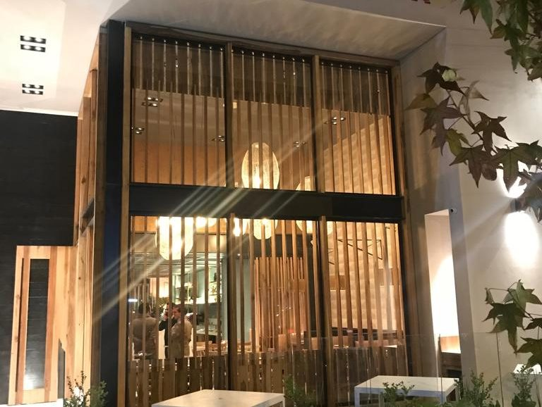
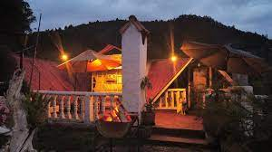
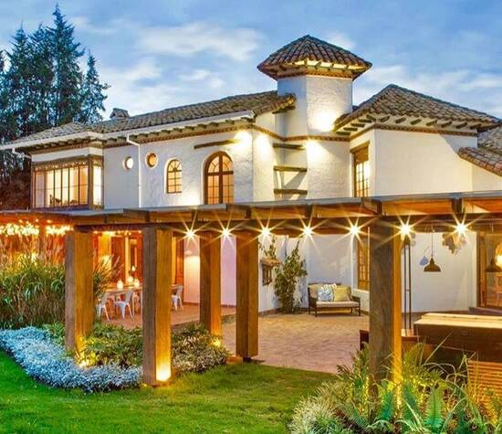
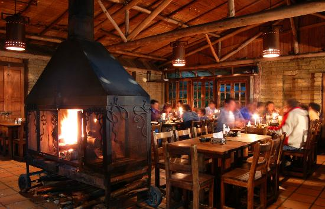

EXPLORA LA RUTA GASTRONOMICA
RESTAURANTES ALTA COCINA


SEMOLINA
Km 2-5 vía Chía-Cajicá.
Centro Comercial Fontanar Local 2-53


ALTAMIRA
Al costado norte de la Iglesia
Nuestra Señor de la Valvanera,Chía
RESTAURANTES LOCALES


RESTAURANTES GOURMET


CELESTINA
Via Cajicá Chia,
pasando el puente peatonal de Fontanar,
al lado de la Mercedes, Chía Colombia

GALAPAGO CAMPESTRE
Calle 19 14-08, Chía Colombia


JOHAN SEBASTIAN APONTE DIAZ
KEWIN ALEJANDRO RODRIGUEZ HERRERA